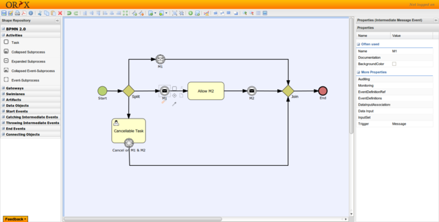
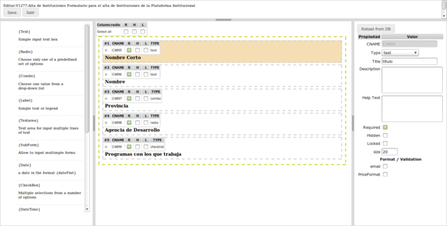
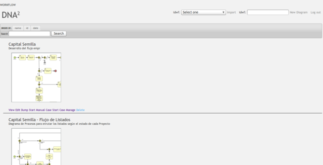

Welcome to DNA²
DNA² is an BPM (Bussiness Process Model) & RAD (Rapid Application Development Suite) - a toolkit - for people who build applications focused on Proccesses. Its goal is to enable your team to develop projects much faster than you could if you were writing code. BPM model will give you the ability to: model, test, deploy, run, manage and share processes, minimizing the amount of time needed for a given project.
DNA² is a WYMIWYR suite so, what you model is what you run.
What does DNA² means anyway?
The DNA² system is inspired in the biomulecule DNA and its ability to store and combine information.
The name of the system refer to DNA to... applications, informations systems,users..
so DNA2forms (dna "to" forms), DNA2information systems, etc/
our vision can extend DNA² any area where a task can be automated.
Who is DNA² For?
DNA² is right for you if:
- You want to deliver projects with great Flexibility and Extensibility.
- You need high degree of collaboration between IT crew and Process Owners/Clients
- You want to test some bussines process or bussines logic
- You need to create a Database of how things are done across the Bussines or Organization (a process models database)
- You need a to deploy a system focused on processes and CMI .
- You want to model and optimize processes
- You eschew complexity, favoring simple solutions.
- You need clear, simple, themable user interfacce.
- You want to do more in less time
How things are done in DNA²
You draw
Draw your models using Oryx BPMN2.0 model editor a completly web based editor, you don't need to install any app in your PC in order to be able to start modeling, anyone with a compatible browser can view and edit models.
You Design the forms needed
DNA² has a built-in form designer easy to use, to make simple web forms in minutes, also an options repository is available(for reusable options like: yes/no, states, countries etc.) and a list of the most common widgets in forms (select,option text,text-area,date, etc).
You Test
Once you have your model ready to test, just click "Start Manual" in the model Browser and enjoy! also you can search and manage your models from the browser
You Deploy
Deploy full-featured apps with:
- Msg InBox
- Task Panel
- Forms
- Print Outs
- Search Engine
- Reports
Start right now!
Read this introduction and get started now!